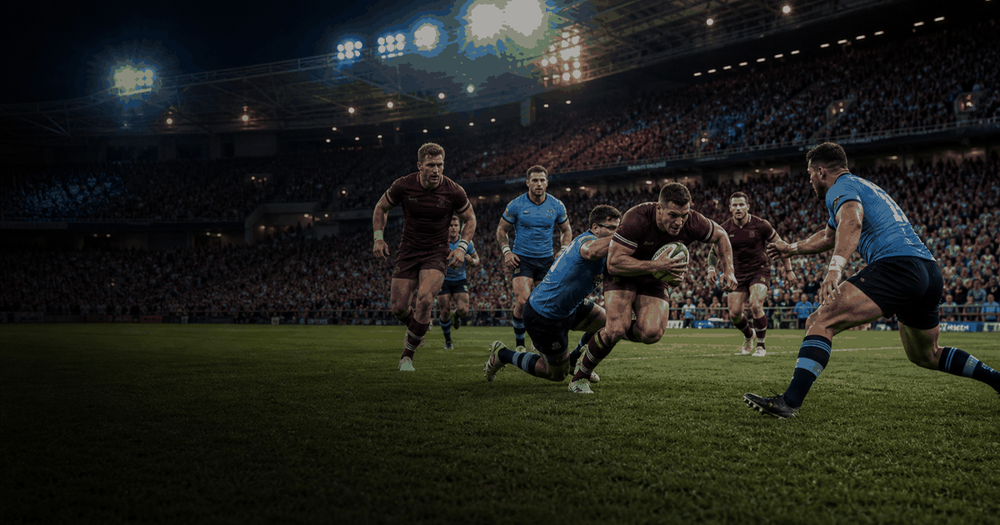

rugby event guide
State of Origin
The best-of-three rugby league series between New South Wales and Queensland. Use this page for the evergreen format, the 2026 venue-by-venue guide, and match updates as the series unfolds.
First series1980
FrequencyAnnual
Current edition2026
FormatBest of 3
 More rugbyInterested in more rugby?
More rugbyInterested in more rugby?Explore related events, places and calendar moments.
HistoryWhy people follow it
State of Origin is built for fast context: who plays, where the three games are, what changed this year and what the series score means after each match.
Format / rulesUse the edition and stages slides
The year slide answers 2026 planning questions. The match slide is the live record: result, series score, team news and what changes for the next game.
Series wins
1Queensland
24
2New South Wales
17
3Drawn series
2
4Game III deciders
Classic
5Neutral venues
Occasional
RecordsRecords TBC
Verified records should be added from the official organiser before replacing this placeholder.
Notable moments
- Selected edition: 27 May - 8 Jul 2026.
- Host context:
 Australia.
Australia.
Recent series winners
| Year | Winner | Series |
|---|---|---|
| 2025 | Queensland | 2-1 |
| 2024 | New South Wales | 2-1 |
| 2023 | Queensland | 2-1 |
| 2022 | Queensland | 2-1 |
| 2021 | New South Wales | 2-1 |